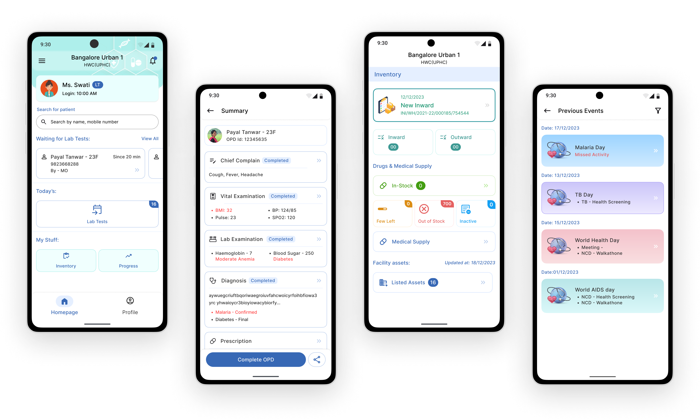
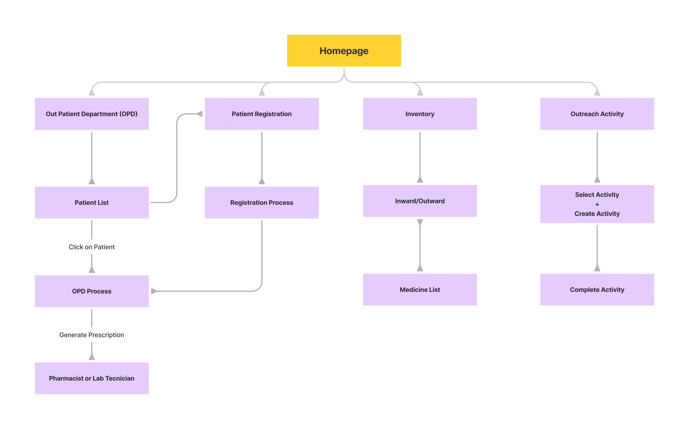

Health and Wellness Centre(HWC) App & Dashboard
Project Overview
The goal was to design a mobile application for Health and Wellness Centre (HWC) doctors and staff in Karnataka to manage Outpatient Department (OPD) services efficiently. The app aimed to streamline patient registration, appointment scheduling, EMR management, telemedicine, health monitoring, inventory management, outreach activities, and provide a dashboard for higher officials.
1. User research and needs analysis
2. Information architecture and user flow design
3. Wireframing and prototyping
4. UI design and interaction design
5. Usability testing and iteration
6. Collaboration with developers
Duration
6 months
Target Audicence
Community Health Officers (CHO), Medical Officers (MO), Staff Nurses, Pharmacists, Lab Technicians & Administrative Officials.
Userflow
The application's information architecture was redesigned based on user feedback and persona insights. The goal was to ensure that navigation was intuitive, and information was organized in a logical and accessible manner.
UI Design
The UI design focused on clarity, consistency, and usability. Design elements such as color coding for different health programs, clear typography, and intuitive icons were used to enhance user experience and facilitate quick comprehension and navigation.
This module handles the entire OPD workflow, from patient arrival to consultation and treatment. It integrates queue management, displaying patient status and prioritizing cases based on urgency. Health workers can manage patient flow, assign tokens, and streamline movement between different service points (e.g., consultation, lab tests, pharmacy). The system tracks patients' progress through the OPD process, ensuring efficient and timely care.


Helps manage medical supplies and resources efficiently. This module tracks stock levels of medicines, vaccines, and equipment in real time, sends alerts for low stock, and generates restocking orders. It also maintains a history of usage, expiration dates, and supply chain updates.


Streamlines patient intake by allowing health workers to efficiently capture patient details, demographic information, and medical history. This module offers a user-friendly form with auto-fill features, reducing data entry time and ensuring accuracy. Integrated with Aadhaar and other identification systems for quick verifications.


Enables health workers to plan and track community outreach initiatives. This module includes features for scheduling immunization drives, health camps, and follow-up visits, with integrated reminders. It also logs outreach efforts, records attendance, and syncs data with centralized health records to ensure continuity of care.


A centralized hub for higher-level officials to monitor OPD performance, track patient visits, and view trends in disease outbreaks and medication prescriptions. This module provides data visualization through charts and graphs, giving insights into resource allocation, patient demographics, and the effectiveness of interventions.


Conclusion
Working on the HWC OPD management app was an insightful journey, allowing me to design a system that significantly improves healthcare service delivery in rural areas. By focusing on user-centered design, I created modules that simplify complex workflows for health workers and ensure better patient care through streamlined processes. Integrating queue management with the OPD workflow, inventory management, and outreach activities provided a comprehensive solution that caters to the diverse needs of health workers and administrative officials alike.
This project deepened my understanding of healthcare challenges in underserved areas and the role of efficient digital solutions in addressing them. The key takeaway was striking a balance between usability and functionality—designing for users with varying technical expertise while ensuring all critical operations are handled efficiently. The experience reinforced the importance of aligning technology with the needs of healthcare systems and inspired me to continue exploring ways to create impactful designs in the health sector.
Made with ❤️ by Sumit.